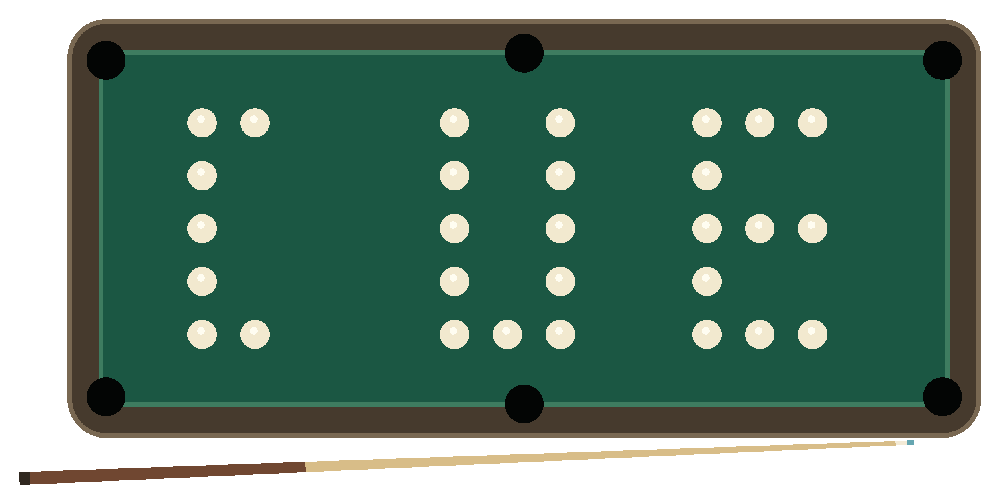
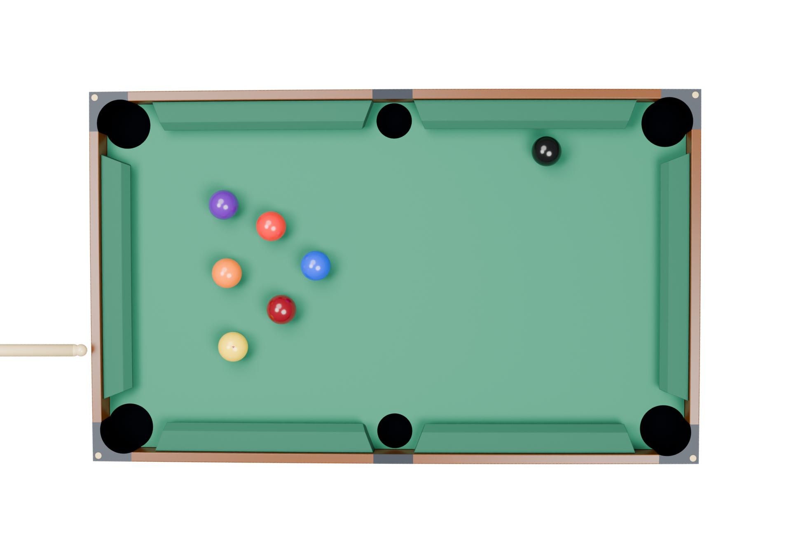
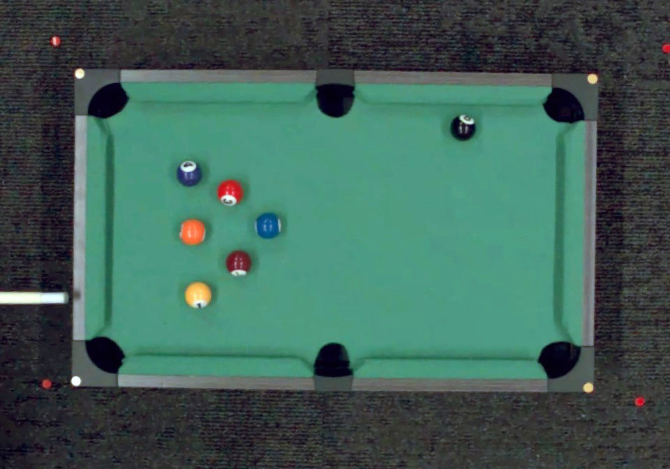
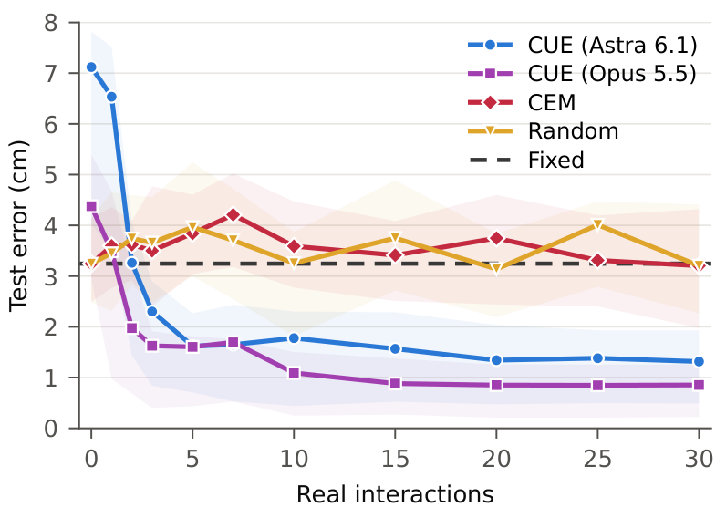

Calibration Using ExplorationClosing the Dynamics Gap through Self-Directed Robotic Interaction
¹ Stanford University · ² ETH Zurich · ³ NVIDIA Research · ⁴ microagi
* Project Co-Lead † Equal Contribution
01 Real2Sim2Real is not solved
Scalable, high-fidelity simulation and multimodal large language models (MLLMs) with emerging 3D spatial understanding have enabled the Real2Sim2Real approach. An autonomous agent reconstructs a digital twin of a scene, iteratively refines a policy in simulation, and executes that policy on the physical robot.
Agentic Real2Sim2Real systems can reconstruct a scene in simulation from camera observations, but contact-rich dynamics such as friction and restitution cannot be observed without interaction. This dynamics gap prevents skills learned in simulation from transferring reliably to the real world.
Billiards makes this problem easy to see. Table reconstruction is simple, while contact-driven transitions are difficult to model in advance. CUE learns these dynamics without human supervision by proposing actions and adapting its simulation in a closed loop.
The dynamics gap
Appearance matches


Dynamics still differ
Prior efforts to recover system dynamics learn from offline data, inheriting human embodiment and action priors, and importantly, are passive: the reconstruction agent cannot actively choose which interactions to examine. Active system identification methods allow exploration, but typically work within a parameter space defined by a human. Those choices introduce assumptions about the scene and can exclude effects needed to fit the real dynamics closely.
With CUE—Calibration Using Exploration, we let the agent develop the reconstruction and experimental process together.
02 Active scene reconstruction through agentic self play
CUE starts with a general instruction:
“Reconstruct the scene in simulation, then interact with the real table until confident that the simulation explains it. There would be no human reset during your exploration, so make sure to plan ahead.”
Every shot changes the table. A useful experiment must reveal something about the dynamics while leaving opportunities for further exploration.
Build the scene, then decide what to measure.
From initial images, the agent builds a MuJoCo model of the table, cushions, pockets, cue, and balls. It decides which dynamics parameters are likely to matter and sets initial ranges for them: plausible, but not yet grounded in this table.
To compare simulation with reality, the agent first built a camera-based ball tracker that turns each real shot into a trajectory comparable to a simulated rollout. It then fit physical parameters by minimizing sim-to-real trajectory difference with CMA-ES over parallel MuJoCo instances replaying recorded shots from their observed initial states.
Instead of continuing its generic opening shots, it proposed new shots targeting the parts of the scene its fitted model explained worst. It could revise the search strategy, refit the model, and test again.
03 Evaluations
We evaluate CUE in both simulated and real-world pool tasks, where the true physics of the target scene is hidden from the agent. In simulation, a MuJoCo pool simulator serves as the “real world” across 25 conditions: five layouts × five physics settings. Each method receives at most 30 shots to build its model.
Final prediction error
Learning through interaction

In real world:
We also deploy CUE with Opus 5.5 on a small real pool table with unknown physical parameters. The CoRL push demonstrations below show the robot arranging balls into C, O, R, and L, with predicted and actual ball positions overlaid after aligning the simulated and real-world dynamics.
C
O
R
L
04 Why didn’t it match the simulation perfectly, and what’s still missing?
After seeing the system work well in simulation, we expected real-world experiments to go smoothly. The real table proved otherwise. We share the lessons we learned with the community in the hope of encouraging more people to tackle robotics in an “imperfect” world.
Agentic reconstruction needs richer dynamics models
Small ball imperfections and local surface variations remain difficult to reconstruct from camera views. Parameter tuning cannot capture effects outside the model, and explicitly modeling every imperfection means continually extending the simulator. A future research direction is a combination of physics-based simulation and data-driven dynamics models in agentic robotic systems.
Agentic robotics needs stronger vision tools
While many claim computer vision is solved, agents still struggle to build reliable vision pipelines for real robotic experiments. Agents kept patching the vision pipeline and needed prompting to reconsider the approach. Agentic robotics creates a concrete opportunity for the vision community: robust, reusable tools that agents can reliably assemble, verify, and use in the physical world.
Agentic robotics needs better experimental judgment
Our coding agent needed guidance on how to spend time and compute across long physical experiments. We need systems that preserve future exploration options and help agents decide when to think, act, refit, or backtrack in the physical world.
An isolated shot probes rolling and cushion behavior.